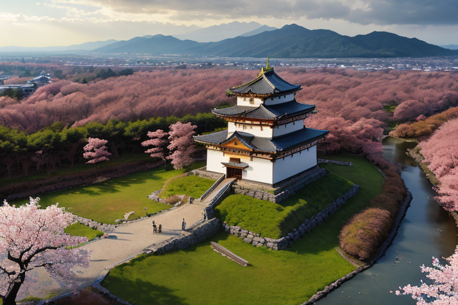
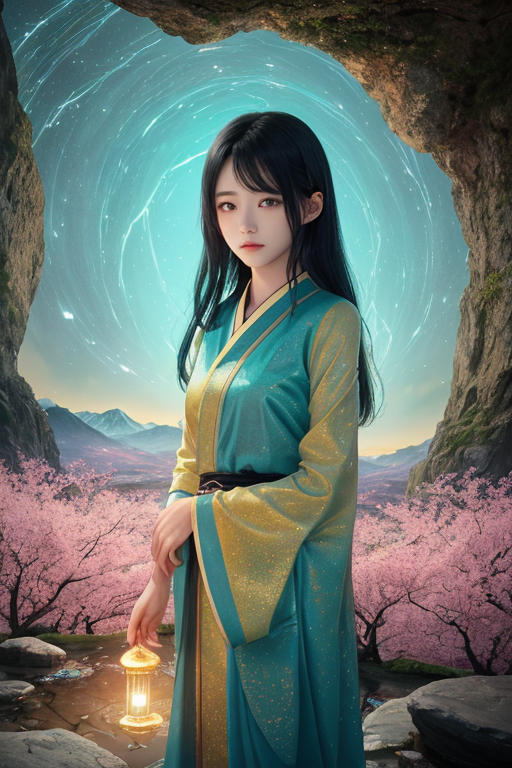
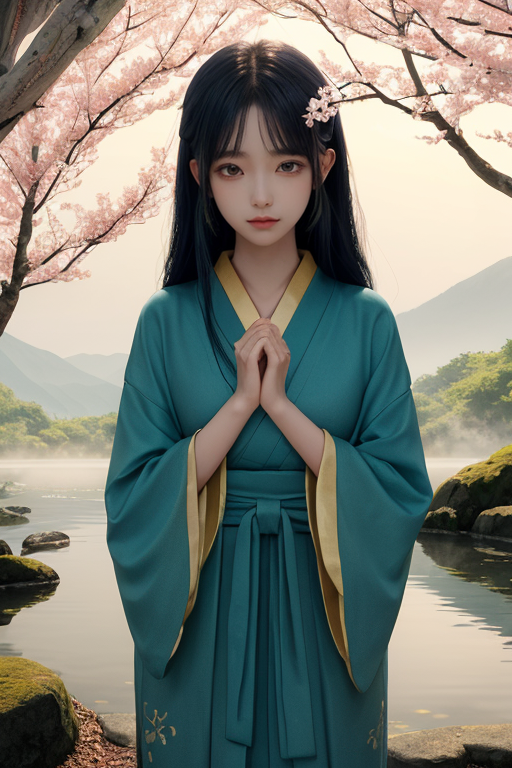
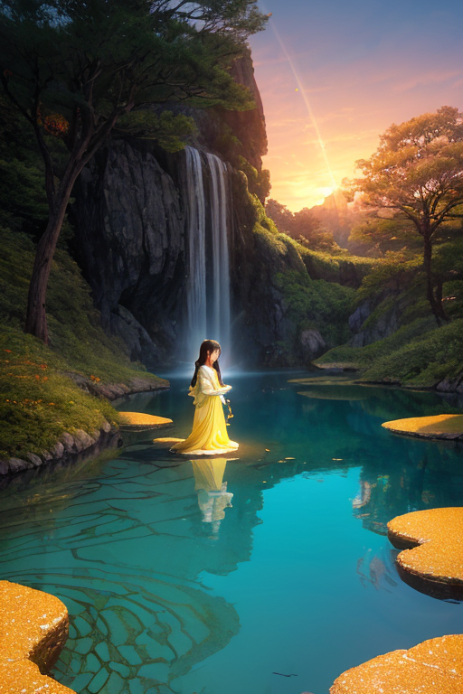

第一章 現実の福島
あなたはまだ気づいていない。この土地にも、王がいることを。
鶴ヶ城の天守閣から望む会津盆地は、深い静寂に包まれていた。桜の季節は過ぎ、新緑が城の白壁を優しく縁取る。この城は、戊辰戦争の砲撃に耐え、震災の揺れにも耐えた。石垣の一つひとつが、幾度もの「壊れ」と「再建」の歴史を沈黙のうちに語り継いでいる。
その静寂の中心に、一人の青年が佇んでいた。蒼と金の光をわずかに纏うその姿は、王、フクシマル・リボーンである。彼の目には、この土地に刻まれた二つの大きな「裂け目」が見えていた。一つは白虎隊の無念が染み込んだ山々の記憶。もう一つは、より新しく、より深い、2011年3月の傷跡だ。
「壊れた世界を、再設計できるか？」
彼は無言で問いかける。王の役目は歪みを調整すること。巨大な津波を数秒遅らせ、崩壊する建物の衝撃をほんの少し和らげること。しかし、あの日、彼がどれほど星の力を振るっても、押し寄せる現実の前では無力だった。流された町、分断された日常、変わってしまった空気。彼の掌から今も、あの時の冷たさと、自責の念が消えることはない。

第二章「歪みの兆候」
鶴ヶ城の天守から、彼は磐梯山の穏やかな稜線を見つめていた。春の訪れと共に、花見山には桃の花がほころび始める。しかし王の目には、土地の深層に刻まれた、目に見えない亀裂が映る。2011年の巨大な歪みは収束したが、その余波は複雑なエネルギーとして地中に滞留し、時に微かな振動として表面化する。それは物理的な揺れではなく、人々の祈りや記憶、未来への不安が織り成す、精神的な地鳴りのようなものだ。
「歪みの兆候は、物理的現象だけではありません」
主席妖精リヴィアが傍らに現れ、静かに告げた。彼女の手には、五色沼の水のように様々な色に輝く、感情のエネルギーが集約された結晶が揺れていた。蒼と金の光が、不安定に脈打っている。
「分断されたものは、目に見える風景だけではない。心の均衡もまた、崩れています」
王は掌をかざした。掌から漏れる蒼い光が、地中に漂う無数の「祈り」の断片に触れる。避難を余儀なくされた人々の未練、帰還した人々の覚悟、そしてこの地を訪れる多くの人々の「応援」という名の、時に重すぎるまなざし。それらが複雑に絡み合い、新たな歪みの種を生み出そうとしていた。彼は目を閉じた。星から授かった調整の力は、物理的法則には介入できても、この心の荒波を鎮めることはできない。無力感が、悔恨の念を増幅させる。
第三章「王の葛藤」
磐梯山の裾野、五色沼の水面は、天候や光によって絶えず色を変える。彼はそのほとりに立ち、自らの内面を映し出そうと試みた。蒼い水鏡には、星から派遣された無感情な調整者としての己と、この地の痛みを背負いすぎて歪んだ「フクシマル・リボーン」とが、二重に映っている。壊れた世界を再設計するとは、果たして何を意味するのか。物理的な復興は、人々の手によって確かに進んでいる。彼の役目は、その歩みをわずかに後押しし、新たな災いの芽を摘むことだ。しかし、心の分断、記憶の亀裂、未来への不安——これらは彼の調整の範囲外にあった。
「あなたは、すべてを修復できる王ではないのです」
リヴィアの声が、静かに心に響く。彼女は、彼の自責の念が新たな歪みを生まぬよう、常に均衡を計っている。
「私たちにできるのは、『再生』のための『間』をほんの少し、用意することだけ」
彼は拳を握りしめた。掌の中で、蒼と金の光がかすかに脈打つ。この力でさえ、過去を書き換えることはできない。ならば、と彼は思う。受け止めること。この地に積もったすべての時間——戊辰の悲劇も、震災の爪痕も、そしてその間を埋めてきた桃の花も、ラーメンの湯気も、赤べこの揺らぎも——を、否定せずに見つめること。それが、星から遣わされた者として、唯一取り得る「再設計」なのかもしれない。

第四章「妖精との対話」
五色沼の水面は、あらゆる色を飲み込み、深い静寂を湛えていた。リヴィアはその畔に立ち、揺らぎない水鏡を見つめていた。
「王よ、『再設計』とは、新たに描くことではありません」
彼女の声は水のように冷たく、透き通っていた。
「壊れた陶器の破片を集め、その割れ目を光で縫い合わせること。過去を消すのではなく、その重みを、この土地の新たな地層として定着させることです」
ヒバリナが梢から囁いた。
「私たちが拡散するのは、『何もなかった』という希望ではありません。『あれがあったのに、それでも』という、か細く確かな芽なのです。花見山の桃も、大内宿のかやぶきも、その芽の上に咲く花です」
フクシマル・リボーンは、自らの掌を見た。蒼と金の光は、過去を修復する力ではなく、現在という一点で、崩れゆく均衡を支える「縫い糸」でしかない。彼は悟った。再設計とは、完璧な未来図を描くことではなく、壊れても尚、魂の均衡を保ち続ける「静律」そのものを、この地に織り込む作業なのだと。

第五章 微調整と余韻
磐梯山の裾野に広がる五色沼は、その日も静かに水鏡を湛えていた。青、緑、赤、様々に色を変える水面は、地底の微細な鉱物と光の加減で生まれる。フクシマル・リボーンは湖畔に立ち、目を閉じた。彼の感覚は、沼の水脈のように地中深くに広がる、この土地の「静律」へと向かう。震災の衝撃で乱れた地殻のリズム、分断された人々の心の波長、それらは今も複雑に絡み合い、かすかに震えていた。
彼はヒーローではない。蒼と金の光を、目に見えない精神波の「縫い糸」として解き放つ。大きな傷は癒せない。だが、ある老婆の夜間の不眠を少し軽くし、ある少年の将来への不安を一瞬和らげ、コミュニティの軋みが爆発する寸前の緊張を、ほんの少しだけ緩和する。それは、完璧な再設計ではなく、壊れた陶器の継ぎ目を慈しむように、現在という一点で均衡を支える行為だ。
鶴ヶ城の天守が夕陽に染まる頃、彼の作業は終わった。全てを元通りにはできない。しかし、この地に息づく「あれがあったのに、それでも」という静かな決意を、彼は微調整によって明日へと確かに手渡した。
あなたの町にも、王がいる。